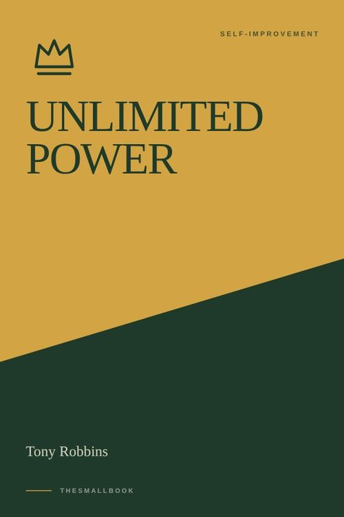

Library › Psycho-Cybernetics vs Unlimited Power
Psycho-Cybernetics vs Unlimited Power: Which Should You Actually Read?
Both books live on the same shelf: Self-Improvement. Both are here to read, in full, right now. Psycho-Cybernetics (1960, Maxwell Maltz) argues: You will never outperform your self-image. Upgrade the image, and the results upgrade themselves.… Unlimited Power (1986, Tony Robbins) argues: Peak states are not accidents: physiology, focus and meaning produce them on demand. Model what work…

Psycho-Cybernetics
Dr. Maxwell Maltz, a plastic surgeon, noticed something strange: he could fix a patient's face perfectly, yet many still felt ugly - while others transformed completely from minor changes. Conclusion: the real face is the one in the mind. Your self-image sets
READ PSYCHO-CYBERNETICS FREE →
Unlimited Power
Robbins's first blockbuster distills neuro-linguistic programming into a system: the state you are in (posture, breath, biochemistry) determines the quality of your thinking; focus determines state; the meaning you give events determines focus. From there: mod
READ UNLIMITED POWER FREE →⚖ The Straight Answer
Read Psycho-Cybernetics if you want a plastic surgeon's discovery: change your self-image and your life ch
Read Unlimited Power if you want the new science of personal achievement. it is not enough to know; you
The honest order for most readers: start with Unlimited Power for the base, then go deeper with the other. Both summaries are here, in 26 languages.
Every summary has it all: lessons, examples, action steps, audio in your language.
Use this list well
Where should I start? Start with Psycho-Cybernetics: You will never outperform your self-image. Upgrade the image, and the results upgrade themselves.
Use this list well
Where should I start? Start with Psycho-Cybernetics: You will never outperform your self-image. Upgrade the image, and the results upgrade themselves.